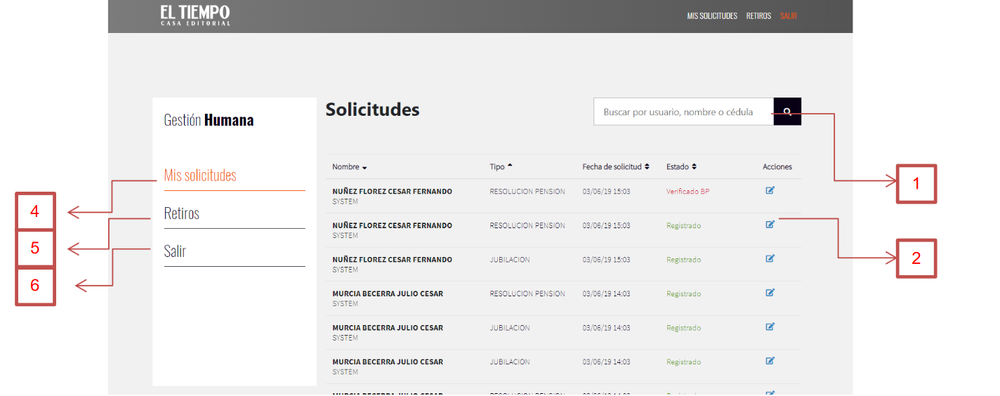

Consultar Solicitudes
La ventana “Consultar Solicitudes” varía dependiendo el rol que tenga asignado, la ventana que se muestra a continuación es con el rol de “Jefe”, esta vista no tiene ningún cambio con el rol de“Business Partner”.
La siguiente ventana de “Consultar Solicitudes” es la que se muestra a la persona con el rol de “Proveedor”

En esta pantalla tenemos seis campos u opciones con las cuales podemos interactuar, estas acciones son las siguientes:
1. Buscar: En este campo se pueden ingresar varios datos para la búsqueda, los datos son: Usuario, nombre y cédula. Después de ingresados estos datos deberá hacer click en el botón con una imagen de lupa que está al costado derecho:
2. Editar: esta opción abre la ventana editar, dependiendo el rol permite editar unos campos específicos.
3. Aprobar: Esta es una opción que cambia dependiendo del rol, al ingresar con el rol de “Proveedor” esta opción cambia a “Aprobar”, la cual nos dirige a la ventana de aprobar.
Menú de navegación
4. Mis solicitudes: Esta es una opción del menú de navegación que dirige hacia la ventana de “Consultar Solicitudes”.5. Retiros: Esta es otra opción del menú que redirige a la ventana de “Consultar Retiros”.
6. Salir: La última opción de menú de navegación es la encargada de cerrar sesión, que dirige a la ventana “Inicio de sesión”.